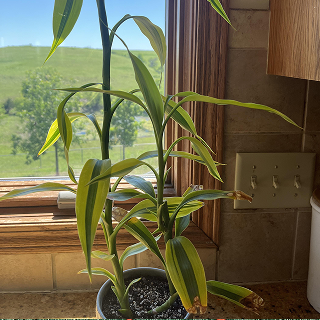

lucky bamboo
DEC, 12
2027
2027
Bought when I first arrived in Delft. it stayed with me for two years, growing alongside me.

Someone picked up your lucky bamboo. It’s now part of someone else’s day!